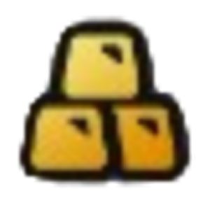
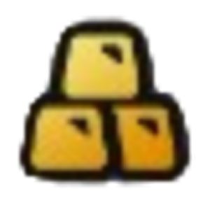

Интерактивная карта
Общий прогресс выполнения
Сундуки Файлума
- Мини-грузовик в подворотне на западе
- Мини-грузовик в здании на юго-западе
- Мини-грузовик в переулке на юго-востоке
- Мини-грузовик в переулке на севере (центр)
- Мини-грузовик около канатной дороги на юго-западе
- Мини-грузовик около лестницы, сверху
Иконки и карта взяты из игры Zenless Zone Zero Все права принадлежат их правообладателям.

Каверна Лэмнос
Центральная промзона
-
Высотка: восток (
 9 сундуков,  1 точка сбора, 1 Архив «Марселя»)
0/11
9 сундуков,  1 точка сбора, 1 Архив «Марселя»)
0/11 -
Высотка: запад ( 3 сундука, 1 Любопытный бродячий банбу)
0/4
-
Крыша ( 1 сундук)
0/1
-
Складская зона ( 6 сундуков, 1 точка сбора,
 2 Панегириста ликующих)
0/9
2 Панегириста ликующих)
0/9
ДАЛЕЕ В ПРОЦЕССЕ РАЗРАБОТКИ!!!
Старый рабочий посёлок
-
Основная карта ()0/23
Старый НИИ
-
Основная карта ()0/28
Обогатительный центр
-
Основная карта ()0/16
Апартаменты «Комфорт»
-
Основная карта ()0/28
Название карты
Точка сбора
Бродячий банбу
Настройка
Архив «Марселя»
Пространтсво скверны
Иконки и карта взяты из игры Zenless Zone Zero Все права принадлежат их правообладателям.